着色器参考表¶
本篇完全使用Xiv Modding的材质表格，仅提供中文机器翻译。
内容完全照搬Modding wiki,有英文基础建议阅读原文。
Character Shader¶
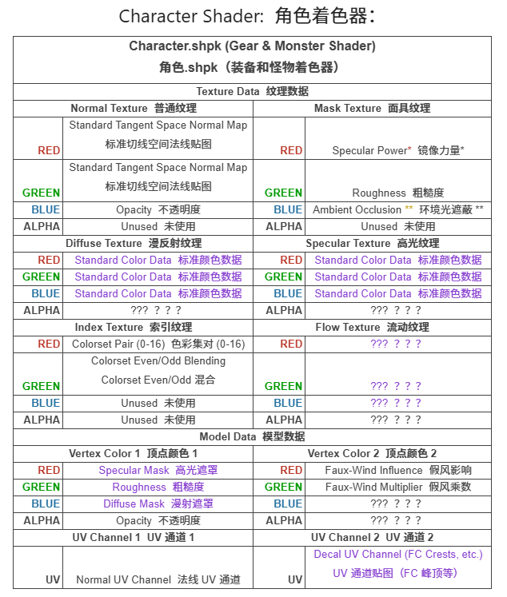
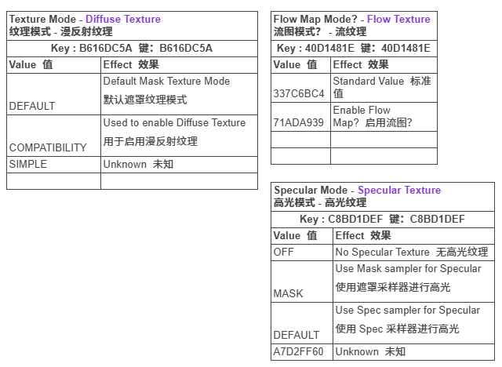
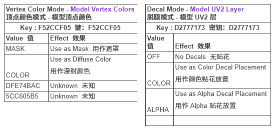
这是用于大多数你可以模组的物品（装备、仆从、坐骑、武器）的标准着色器，这些物品不是与角色创建器绑定的选项。这个着色器可能是你最常查看的。
基于Keys，这个着色器还能做其他几件事，我将在下面解释。
这个着色器可以利用一个名为"效果 ID"的字段。总共有 5 种着色器效果，编号 3 用于一些新装备上看到的全息/虹彩效果。
为了使用这些效果，你必须还要设置"效果不透明度"的值。0 表示没有效果，1 是全效果，超过 1 似乎是乘法效果。
这种效果只能在带有新角色着色器的装备上实现，而不能在Legacy上实现。
编号 1 似乎应用了一种"透明乙烯基叠加层"效果。
据进一步调查，认为mask的红色通道实际上比高光强度更接近金属使用，但由于金属度也通过颜色集值进行控制，因此这张图表将继续将其标记为高光强度，因为这也是社区发现相对可以正常工作的方式。
Character Legacy Shader¶
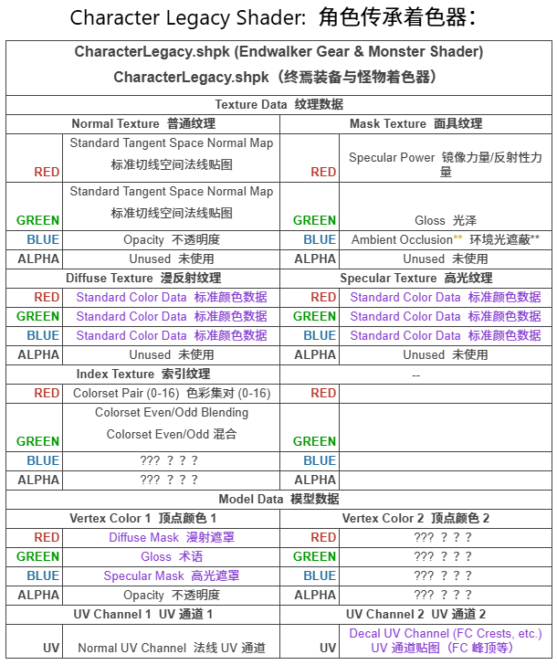
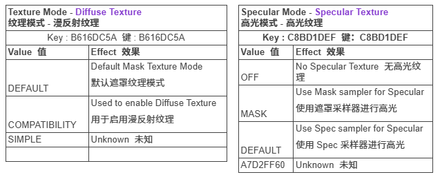
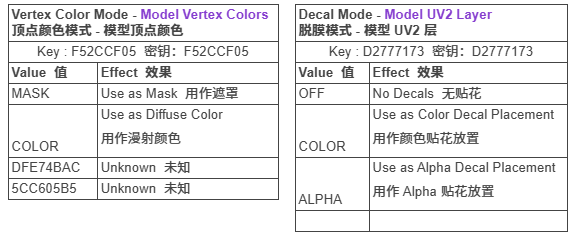
这是角色传承着色器。它是旧版 endwalker 着色器的移植，用于兼容由 Square Enix 未更新的旧资产。不建议继续为这个着色器创建任何内容，因为它无法完成新版角色着色器所能做的一切。大多数资产仍将使用此着色器，除非由 Square Enix 或模制者更新。据我们所知，此着色器无法处理新版角色着色器所能处理的一些额外着色器效果。
Skin Shader¶
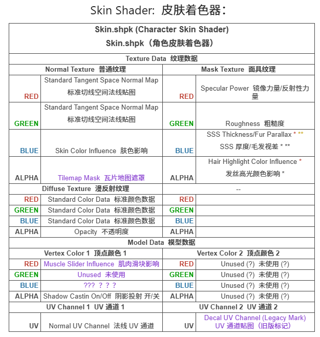
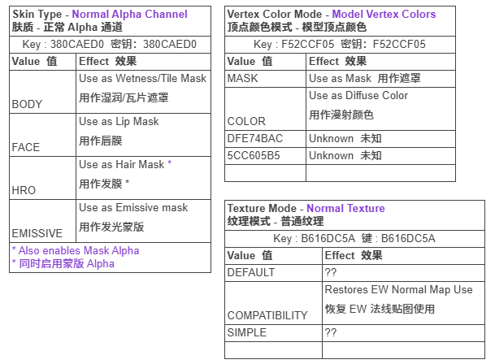
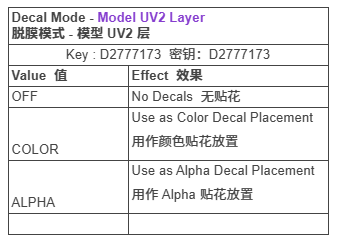
这是用于身体皮肤、面部和带有毛皮的大猫种族使用的着色器
在使用这个着色器进行身体修改时，请注意，截至撰写本文时，女性基础模型（bibo、tf gen 3 等）的身体修改使用皮肤类型 Body/标准皮肤。然而，男性身体修改（TBSE）使用 Hrothgar 着色器键来允许随头部头发颜色变化的身体毛发。因此，为这两种模型制作地图可能会有所不同。在使用/编写 Hrothgar 版本的皮肤着色器时，请特别注意 alpha 和蓝色通道，因为它们是相互关联的。蓝色通道将同时影响肤色（脱色）和发色选择，而 alpha 则决定在哪个位置使用哪种效果。蓝色通道中非纯白色且 alpha 为 BLACK 的部分会产生脱色效果，而 alpha 为 WHITE 的区域则会产生发色影响。
您可以通过混淆 Subsurface 着色器在皮肤上创建一种仿金属效果（但需小心）。为此，请将蒙版的蓝色通道设置为接近 255 的值。这会创建一种同时具有金属和皮下效果的效果。此方法仅应由了解自己在做什么的 Power 用户使用。所有其他用户应改用下面列出的着色器 ID 10 方法来在皮肤上实现金属效果。
皮肤可以有半透明效果。
要利用这一点，像平常一样使用 Diffuse 上的 alpha 通道作为透明度，并将材质常数（在 umbra 中）中的 g_alphathreshold 值更改为其他值。目前，将此值设置为 0.5 可以创建良好的效果，而不会剔除任何背面。保持该值低于 1.0 以防止面剔除。不要使用材质中的启用透明度复选框。这会导致崩溃。还请确保“隐藏背面”处于未选中状态，这样你才不会完全透明。（感谢 discord 上的 eggpies 提供此信息）
作为发射（emissive）是一个与 hrothgar（皮肤上的身体毛发）相同级别的着色器关键字，你无法使用香草着色器同时使用发射和可染色的身体毛发在皮肤上。这是不可协商的。
- 当着色器 ID 设置为 10（默认值为 1）时，这会激活皮肤上的“真实”金属效果，并将遮罩的蓝色从次表面/毛发视差更改为金属度。当使用此着色器 ID 创建金属效果时，所有皮肤/非金属部分在蓝色通道中必须为纯黑色（在 RGB 模式下会导致其看起来呈黄色）。值越接近白色，金属感越强。绿色粗糙度通道也需要特别注意。值越接近黑色，金属看起来越有光泽/抛光，但由于 14 实现了这种方式，它还会更多地从天空盒/环境光照中拾取颜色，以至于如果粗糙度值过低，它会完全改变金属的颜色。为了避免天空盒褪色但保持金属的光泽，建议将值保持在中等灰度附近。低粗糙度下的天空盒染色效果在任何金属部分上更明显、更可见。仰面朝天，所以胸前的任何东西，或者如果手臂弯曲成 90 度角（例如在胸前折叠）。
标准/身体皮肤着色器默认使用的瓦片编号是 63，它会产生湿润效果。这让我们假设身体皮肤着色器的 alpha 通道是一个湿润遮罩，但实际上任何瓦片 ID 编号都可以通过手动更改来使用，因此身体皮肤着色器的 alpha 通道实际上是一个瓦片遮罩。换句话说，更改这些瓦片是高级用户功能，如果只是像以前那样使用 alpha 通道，实际上变化不大，除非你打算手动将湿润效果的瓦片图案调整为其他效果。
Hair Shader¶
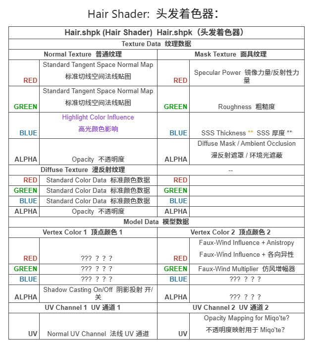
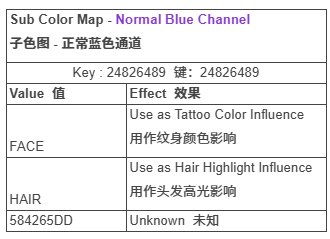

这是头发着色器。许多事情都发生了变化，与角色不同，这个着色器没有遗留版本。所有旧的头发模组都必须转换为使用本节中描述的通道。头发也用于猫魅族的尾巴。
目前，这个着色器似乎对外观插件和工具（如 Anamnesis、Glamourer 和 Ktisis）过去用于“头发发光”参数的值没有反应。这表明有些东西被打乱了，但我们目前还不确定是什么。
iris Shader¶
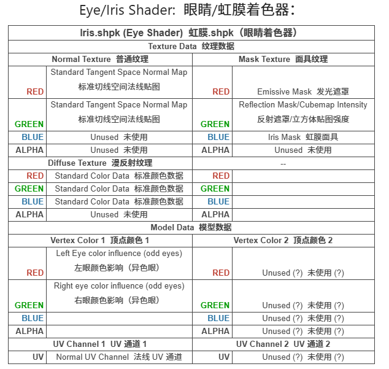
这是虹膜，或新的眼睛着色器。这个着色器没有适用于玩家的旧版本，因此所有眼睛模组都必须通过 Loose Texture Compiler 或 Textools 的 Eye saver 等转换器进行转换。这是不可协商的。
新的虹膜着色器允许巩膜和虹膜位于同一贴图中，从而实现一些有趣的效果。
与旧的眼部模组相比，有一个重要的区别是，高光不再是一个可编辑的纹理，而是使用了目前无法进行模组的球面贴图。所有预 DT 的高光模组或修改都无法再使用。如果你想要创建一个假的高光，你可以将其绘制到漫反射上，但它将是静态的，不会移动。你可以使用下方列出的着色器常量来减少或改变现有的高光（到一个现有的球面贴图瓦片），但你无法制作自定义的高光。
同样地，敖龙族虹膜环现在也是着色器的一部分，不再是纹理的一部分。任何修改 Au Ra 肢体的 mod 都必须被废弃。虽然形状不能改变，但有一个着色器常量允许它们打开和关闭，并且这对于所有眼睛都可用，而不仅仅是敖龙族。
此外，巩膜（眼白）可以通过绘制到漫反射上来改变，或者通过更改着色器常量 - 白色眼睛颜色来改变（White Eyes Color）。
由于眼球现在是一个漫反射纹理，因此无需牺牲虹膜异色就可以获得多色眼睛。这既使它们与各种头部更加兼容，也允许使用超过 2 种颜色。由于 FF14 会叠加最接近图层样式“正片叠底”的眼球颜色，因此最好通过在绘图程序中模拟来检查颜色如何相互作用。你可以选择在漫反射的眼球部分上用颜色绘制，然后允许眼球颜色影响改变这些颜色，或者在漫反射上用颜色绘制，然后在“蓝色通道”上遮盖相同的区域/渐变，以阻止这些部分随着眼球颜色而改变。
Character Tattoo/Face ETC Shader¶
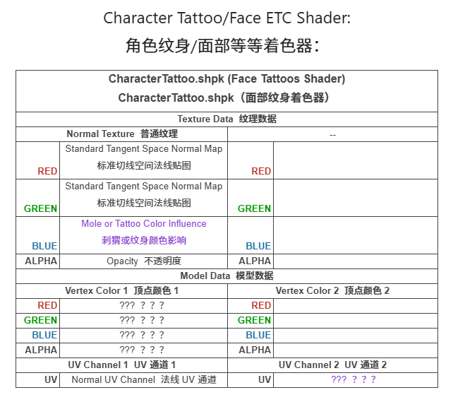
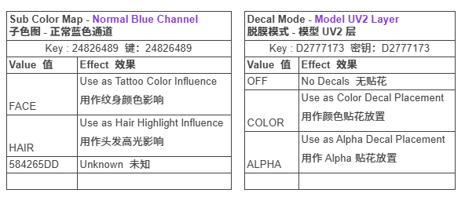
因为 Facial ETC 纹理具有多个材质，它们都指向相同的纹理，但具有不同的着色器键和参数。在更改任何之前，请检查此表格，或为要更改的特定纹理设置唯一的纹理路径。
Stocking Shader 袜子着色器¶
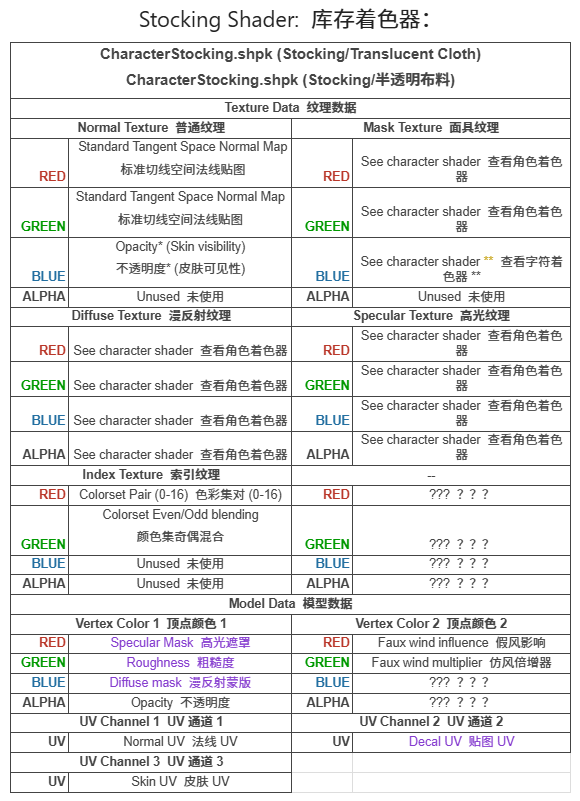
自 7.1 版本起，该着色器正在适配玩家装备，这使我们能够更深入地研究它。该着色器与角色（装备）着色器几乎相同，只有少数例外。主要的是，这个着色器利用 UV 通道 3 来复制并在“袜子”下方放置皮肤，而只使用一个网格，而不是之前使用的双层网格技术。然而，它被硬编码为皮肤材质 A，这意味着它总是对称的皮肤。
在质感方面，“不透明度”在法线贴图的蓝色通道上不再代表整体不透明度，而是决定皮肤在何处以及显示多少“下方”内容。
不过，不要在这个着色器的材质标志中启用透明度，因为它会导致游戏崩溃。
使用这个着色器的大多数装备上使用的“尼龙”纹理和效果是瓷砖材质 43，你可以使用负光泽值来获得漂亮的袜套效果。最后根据当前研究，球面贴图（如全息效果）似乎对这个着色器被禁用了。
自 Penumbra 更新 1.5.1.0（2025 年 8 月 26 日）起，可以分配 stocking shader 使用修改过的材质（mat B 或 Bibo），而不是像通常硬编码的那样默认使用 mat A。要这样做，你必须将属性 "skin_suffix=bibo" 或 "skin_suffix=b" 添加到带有 stocking shader 的适当网格（部件）上。该网格还必须正确设置其 UV3，以匹配修改过的皮肤的 UV 映射。
(Eye) Occlusion Shader: (Eye) 遮挡着色器¶
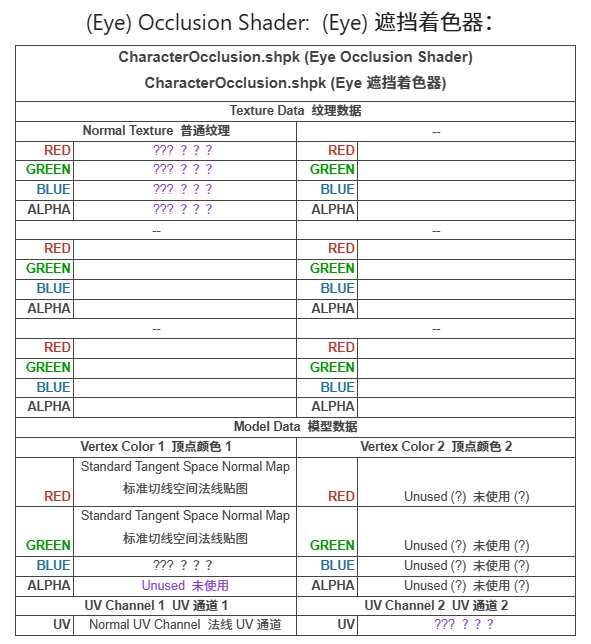
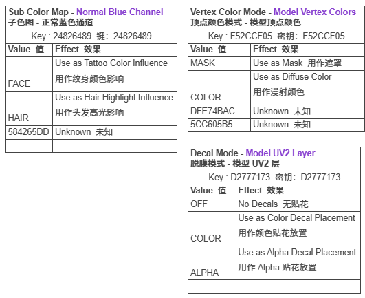
Character Transparency Shader 透明着色器¶
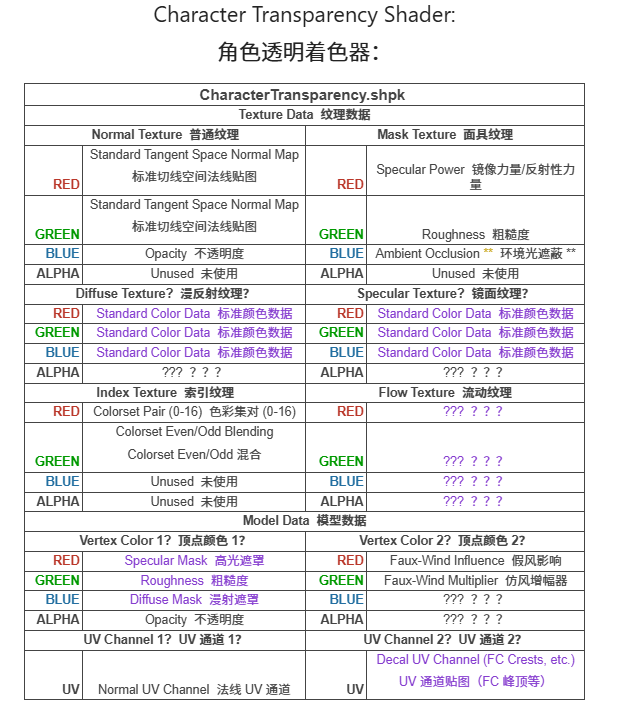
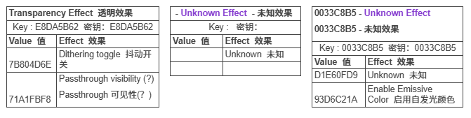
这是一个在 7.2 版本中引入的新着色器，首次出现在 Historia Chokers 上。据推测，它的工作方式与标准角色着色器相似，但使用了几个额外的着色器键来实现更好的透明效果。
当这些着色器与其他特定效果（如白泽的坠落 VFX）叠加时，Character Glass 会出现抖动，而 Character Transparency 则会完全隐藏。这可能是一个选择使用其中一个着色器而不是另一个的原因。
根据最近测试，Passthrough 可见性取决于抖动是否激活。也就是说，如果抖动密钥不存在（同时附加数据位值"00 80 00 00"未启用），Passthrough 效果将不会起作用，即使密钥被打开也是如此。要完全激活抖动，着色器密钥必须启用，并且材料编辑器附加数据部分中的位值必须启用。 （感谢 arghblargh 提供这些信息）
球面贴图 ID 可以使用您在颜色集/颜色表中设置的镜面颜色对这种着色器施加颜色影响，并且瓦片贴图选择可能会破坏球面贴图 ID 的视觉效果，导致不同的结果。在计划使用这种着色器时，网格必须专门为使用这些着色器而制作，因为任何意外的背面或指向错误方向的法线都会导致视觉伪影和问题。话虽如此，这种有目的的使用可以实现一些整洁的效果，例如透明宝石和玻璃器皿。（特别是那些具有堆叠透明度的物品，例如装有酒的酒杯）
这个着色器在Penumbra中使用#field 6
Character Scroll(ing) Shader 滚动着色器¶
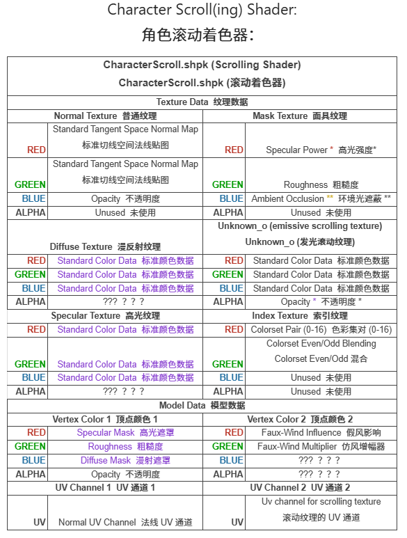
这是一个使用第二个 UV 通道的字符着色器版本，允许发光纹理通过 UV2 在网格上动画。速度和轴可以更改。UV2 必须是一条直线和一个平面，沿着一个轴，所有内容都朝同一个方向定向。
技术上你只需要在 UV2 上做你需要做的事情，以及与 UV 和网格相关联的链接，以与你的 UV1 的 ID 贴图合作，以实现滚动效果，但为了清晰起见，尽量保持直线。
If you are using this shader on a skintight clothing mesh, or a mesh that is otherwise on top of another, make sure to offset the scrolling mesh by 0.03 to avoid LOD and Zfighting errors. 如果你将这个着色器用于紧身服装网格，或用于其他位于另一个网格之上的网格，请确保将滚动网格偏移 0.03，以避免 LOD 和 Zfighting 错误。
使用 Bacara 的 mjolnir mod 作为预设，或者使用 NPC 装备 E9242 作为材质预设，是使用这个着色器最简单的方法。这将使纹理路径指向带有 Unknown_o 的内容，这是你的滚动发光纹理。在制作这个滚动纹理时，你希望它是可平铺的或无缝的，这样当图案重复时就不会很明显。
要使这个着色器也能启用不透明度的着色器键是9A8A46F5。
Shader / Color Set Values¶
Penumbra vs TexTools Name Mapping¶
| Field | Penumbra 名称 | TexTools 名称 | 说明 |
|---|---|---|---|
| Field #3 | Diffuse Unknown | Diffuse Unknown | 漫反射相关参数，具体用途未知 |
| Field #7 | Specular Unknown | Specular Unknown | 高光相关参数，具体用途未知 |
| Field #11 | Emissive Unknown | Emissive Unknown | 自发光相关参数，具体用途未知 |
| Field #17 | PBR Unknown | PBR Unknown | PBR 渲染参数，具体用途未知 |
| Field #20 | Effect Unknown R | Effect Unknown R | Effect 数据 R 通道 |
| Field #22 | Effect Unknown B | Effect Unknown B | Effect 数据 B 通道 |
| Field #23 | Effect Unknown A | Effect Unknown A | Effect 数据 A 通道 |
Shader ID Nonstandard Values Reference¶
Shader ID 非标准值参考表
| Shader Package | Shader ID | Effect（效果） | Notes（备注） |
|---|---|---|---|
| Skin.shpk | 10 | Metalness / World Reflection 金属感 / 世界反射 |
使用 Metalness（金属度）替代 SSS（次表面散射）和 Parallax（视差效果）。 |
| Character.shpk / Hair.shpk (?) | 4 | Fur / Parallax (Strong) 毛发 / 视差（强） |
如果 AO（环境光遮蔽）与 Parallax（视差）存储在不同的 Color Set 行中，则可以在同一张纹理上同时运行。 |
| Character.shpk / Hair.shpk (?) | 5 | Fur / Parallax (Medium) 毛发 / 视差（中等） |
如果 AO（环境光遮蔽）与 Parallax（视差）存储在不同的 Color Set 行中，则可以在同一张纹理上同时运行。 |
| Character.shpk / Hair.shpk (?) | 6 | Fur / Parallax (Soft) 毛发 / 视差（柔和） |
如果 AO（环境光遮蔽）与 Parallax（视差）存储在不同的 Color Set 行中，则可以在同一张纹理上同时运行。 |
| Hair.shpk (?) | 10 | Wet Look / Specular Change 湿润效果 / 高光变化 |
用于改变头发的湿润外观以及高光表现。具体实现方式尚未完全确认。 |
| Character.shpk | 0, 7, 10, 12, 17+ | Mask Blue Channel = Ambient Occlusion Mask 蓝色通道 = 环境光遮蔽 |
Mask Texture 的蓝色通道会被 Shader 读取为 AO（环境光遮蔽）数据。 |
| Hair.shpk | 2 | Ignore Self-Cast Shadows 忽略自身投射阴影 |
当 Shader Key「tattoo」启用时，可以忽略自身产生的阴影。（具体条件尚未完全确认） |